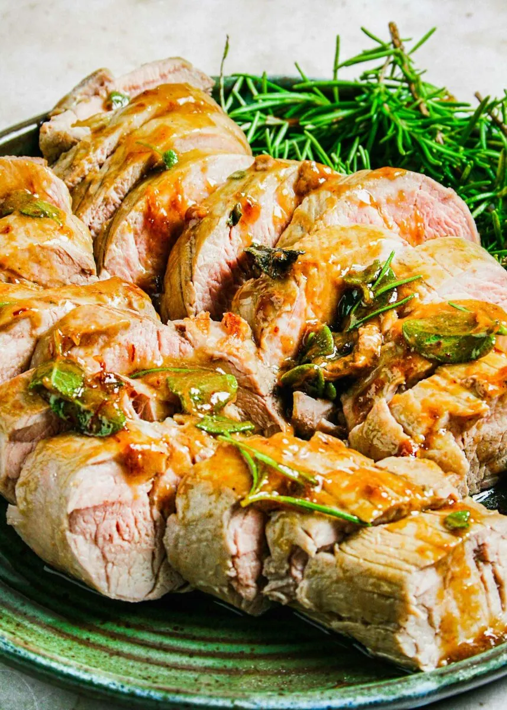

Balsamic Rosemary Pork Tenderloin

Description
This sweet, tangy, and savory version of the pork tenderloin is delicious. As with the other recipes we will marinade it for at least 30 minutes, up to 24 hours. To make the marinade you simply stir together the marinade ingredients then pour the marinade over the pork tenderloin in a bowl or large ziplock bag. I suggest using a thermometer when baking and searing the pork to ensure you do not overcook it. The pork should be cooked to an internal temperatur of 145 degrees F to ensure all bacteria has been killed. I usually stop cooking it about 10-15 degress below that temperature, as it will keep cooking for a few minutes when removed from a heat source. I find pork is juicer and more tender when cooked to around 135-140 degrees F. You should follow your local safety guidelines, and if you are elderly or immunocompromised it is best to cook the pork to 145 degrees F.
Ingredients
- 1/4 cup dijon mustard
- 2 tablespoons maple syrup
- 1 apple cider vinegar
- 1 teaspoon dried thyme
- ½ teaspoon salt
Instructions
- Place pork tenderloin in a bowl or a large ziplock bag.
- Pour marinade over pork tenderloin and let sit between 30 minutes and 24 hours. The longer the better.
- Bake the tenderloin until it reaches 15-20 degrees F lower than the desired internal temperature.
- Sear the tenderoin after it comes out of the oven. If it is still a significant amout of moisture on the pork you may need to pat dry the meat with paper towel before searing it.
- allow the pork to rest for 5 to 10 minutes after removing it from the heat source.
- Note: Searing after baking (as opposed to prior to baking) will allow some of the marinade to dehydrate and adhere to the outside of the meat. You can sear the meat before baking as well, just make sure to pat dry the meat first. Save any marinade left in the bag/bowl, you can reapply it to the pork prior to baking (any bacteria in the marinade will be killed during baking process). Do not let the sugar from the maple syrup burn onto the surface of the meat, but if it perfectly fine if it burns onto the pan (as long as you don't mind the smoke). to remove sugar char from the pan simply soak it in water and the carmelized sugar will dissolve.